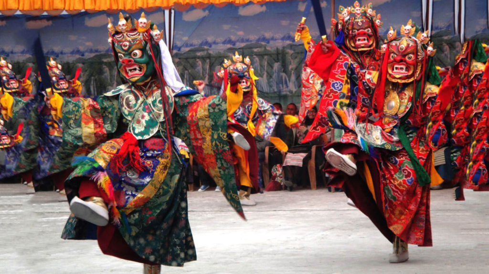

Welcome to Sikkim!

Sikkim, nestled in the Himalayas in northeastern India, is renowned for its stunning natural beauty, rich cultural heritage, and spiritual traditions. The culture of Sikkim is a harmonious blend of indigenous traditions, Tibetan Buddhist influences, and ethnic diversity.
Sikkim celebrates a variety of festivals that reflect its cultural diversity and religious harmony. Losar, Saga Dawa, and Dasain are some of the major festivals celebrated with fervor, where vibrant rituals, masked dances (Cham), and traditional music play integral roles in honoring local deities and marking auspicious occasions.
The cuisine of Sikkim is influenced by Tibetan, Nepalese, and Bhutanese flavors, featuring dishes like Momos (dumplings), Thukpa (noodle soup), Gundruk (fermented leafy greens), and Sael Roti (deep-fried bread). These dishes highlight the region's agricultural practices and use of local ingredients.
Music and dance are integral to Sikkim's cultural expression, with folk dances like Maruni, Tamang Selo, and Gha To Ney being performed during festivals and social gatherings. These dances are characterized by vibrant costumes, rhythmic beats, and narratives depicting local myths and traditions.
Sikkim's spiritual heritage is evident in its numerous monasteries (gomphas) and stupas scattered across the state, including Rumtek Monastery, Enchey Monastery, and Pemayangtse Monastery. These monasteries serve as centers of Buddhist learning, meditation, and religious ceremonies, attracting devotees and tourists seeking spiritual solace and cultural insights.
The state's natural beauty, with its snow-capped mountains, lush valleys, and serene lakes, provides a tranquil backdrop for cultural experiences and eco-tourism activities. Trekking routes, wildlife sanctuaries like Khangchendzonga National Park, and hot springs add to Sikkim's allure as a nature lover's paradise.
Sikkim's handicrafts, such as Thangka paintings, wood carvings, hand-woven carpets, and traditional attire like Bakhu and Kho, reflect the artistic prowess and cultural heritage of its people. These crafts not only serve as decorative items but also hold religious and cultural significance within the community.